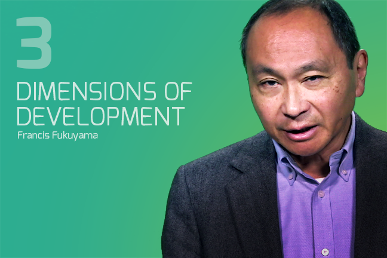
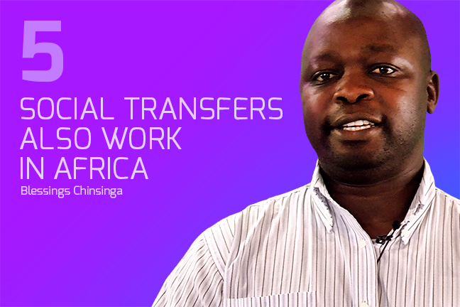
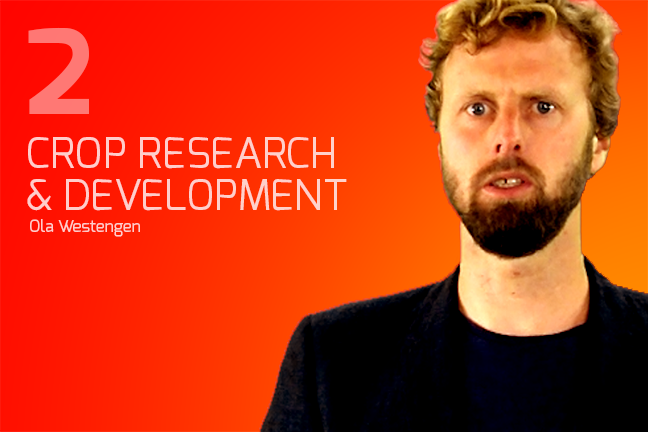
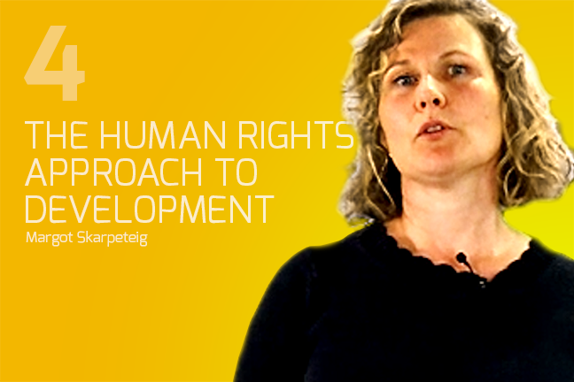
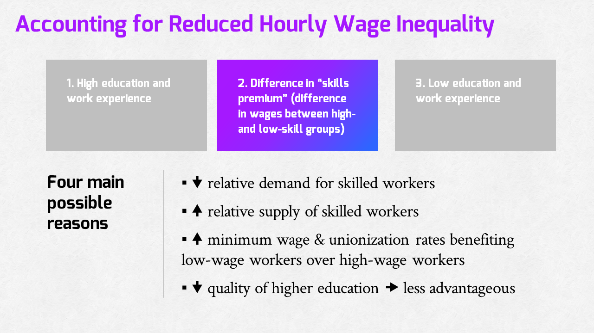
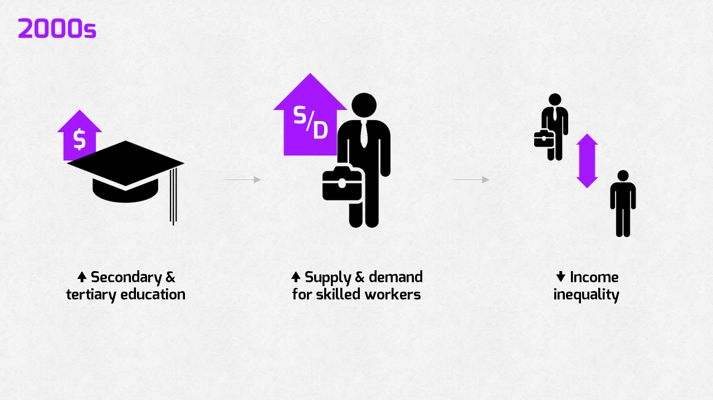
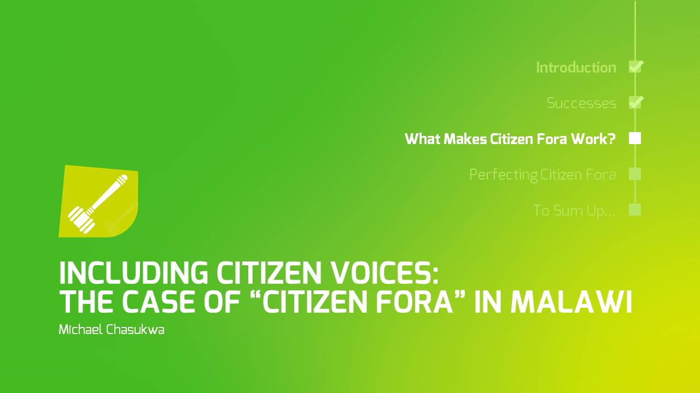
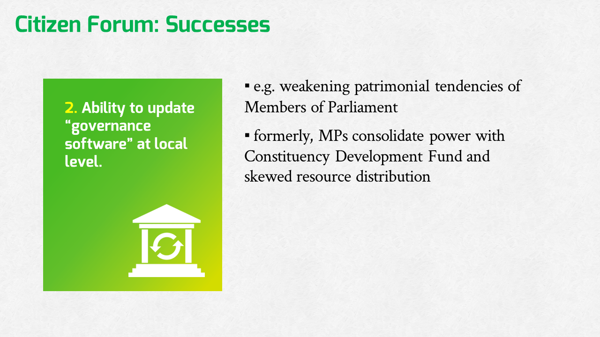
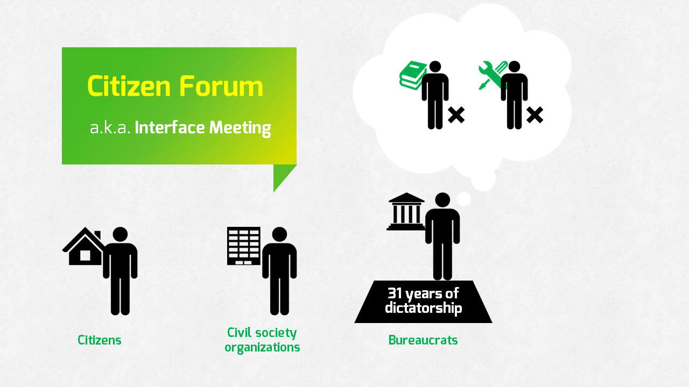
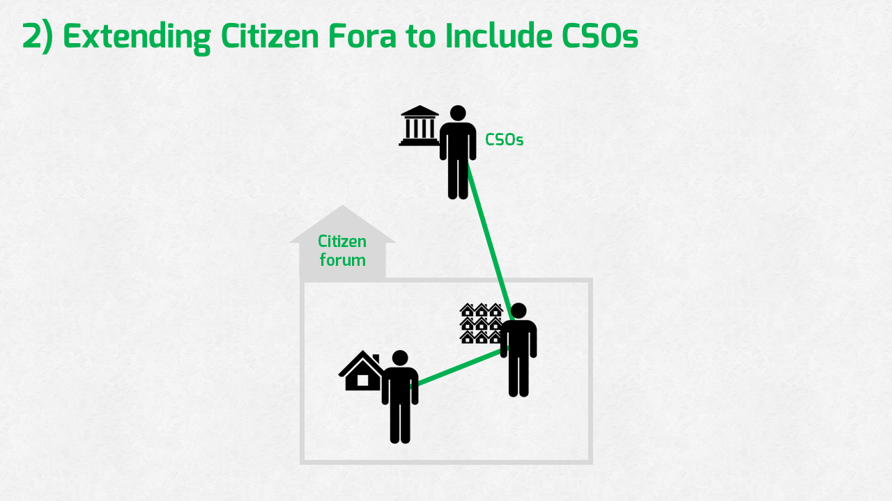

What Works? Promising Practices in International Development
Norway's debut global MOOC brought together 14 international faculty members and special guests to deliver an optimistic, evidence-based primer on international development. Hosted on FutureLearn, the course countered standard industry dropout trends by achieving a 14% active learner retention rate through Week 6—more than triple the historical MOOC average—driven by nightly TA-facilitated discussion structures and targeted formative scaffolding.
Problem & Learner Context
This initiative originated from a distinct pedagogical challenge identified by former students at the University of Oslo: academic coursework in international development routinely over-indexed on systemic failures, structural deprivation, and institutional shortcomings. This left students seeking reasons for optimism. To address this gap, the course was engineered to pivot the narrative toward an empirical examination of what policies and anti-poverty interventions actually yield positive societal results.
The curriculum was structured around five core pillars: General International Development; Growth and Poverty Reduction; Governance and Rule of Law; Global Health; and Aid & International Cooperation. It represented the first global MOOC to feature faculty from the Global South as equal partners, integrating scholars from institutions in Africa and Asia alongside those from North America and Europe.
The course targeted a highly heterogeneous global audience, ultimately attracting thousands of registrants across more than 55 countries. Operating in an open-access space, the design framework had to plan for the typical attrition curves that characterize massive online learning environments. Rather than evaluating success through rigid certificate compliance metrics, the instructional strategy prioritized deep, voluntary social engagement and peer-to-peer knowledge sharing within the system boundaries.




Course splash screens distributed to the international learner audience across 55+ countries on the FutureLearn platform
My Design Decisions & Rationale
This project operated under a cohesive, collaborative design partnership focused on high-depth implementation. While my design partner managed content expertise and direct liaison channels with global subject matter experts (SMEs), I executed the end-to-end multimedia production, technical framework integration, asset creation, and assessment structures.
The course featured a prominent roster of 14 global instructors and special guests, including Francis Fukuyama, which required balancing high-density academic arguments with the cognitive load constraints of an online audience. To preserve the nuance of these world-class scholars while preventing cognitive overload, I acted as an editorial gatekeeper. I systematically structured over 30 video lectures, scripting and editing them to rigorous technical and narrative standards. For highly complex domains, I built intentional instructional scaffolding into brief, focused video segments, ensuring introductory concepts were segregated from material requiring advanced prior knowledge. Additionally, I produced targeted video animations to clarify abstract concepts, which 65% of surveyed participants cited as highly effective for their learning experience.
To foster active community formation on the FutureLearn platform, we rejected passive discussion strategies. Because online forum behaviors in early platforms frequently defaulted to unmoderated afterthoughts, we intentionally built direct content-to-forum routing pipelines. We deployed highly thematic, open-ended discussion prompts embedded directly into the weekly learning sequences, encouraging global learners to contextualize theoretical models against their regional experiences. To anchor these conversations and establish an active feedback loop, I managed a coordinated team of teaching assistants from both Stanford and Oslo who facilitated and grounded the forum threads every evening.
FutureLearn course branding and visual identity for the What Works MOOC
Project Walkthrough & Highlights
To minimize navigation friction for a self-paced audience, the course utilized a structured, three-part linear cadence within the platform's step-based architecture. A lesson was considered complete only when a student traversed all three sequential touchpoints:
Step 1: Domain Expert Video Lectures: Learners engaged with highly polished video lectures featuring the global faculty. These segments delivered core theories, animations, and historical case studies regarding agricultural production, literacy, and global health trends.






Sample lecture slides from the video modules — delivering core theories, animations, and historical case studies across the five thematic pillars
Step 2: Embedded Formative Checkpoints: Immediately following the video delivery, text-based lesson materials and formative questions were introduced. These summative learning questions and reflective activities forced learners to actively analyze and challenge their own biases regarding development aid before progressing.
Step 3: Coordinated Discussion Steps: The final step in the sequence directed learners to dedicated discussion topics. Here, students interacted within localized comment ecosystems, acting as peer facilitators while TAs actively moderated entries nightly to maintain intellectual momentum.
Results & Evidence of Value
Empirical performance data from platform metrics and post-course evaluative surveys validated the efficacy of the instructional framework and social engagement model:
- High-Depth Course Alignment: Post-course surveys demonstrated strong baseline satisfaction with the pedagogical density, with 75% of active students reporting that the instructional level of the course was "about right."
- Efficient Learning Windows: Micro-content strategies proved highly effective for the professional and general audience; 56% of responding learners successfully completed their targeted online tasks within a highly efficient 30–60 minute weekly window.
- Industry-Leading Retention Rates: The course successfully countered standard online decay curves. Platform analytics tracked 2,660 active learners in Week 1 and 374 active learners in Week 6. This represents a 14% sustained active participation rate—more than triple the historical 4% industry completion benchmark.
- Robust Capstone Completion: The emphasis on community scaffolding yielded deep learner persistence, with 325 students successfully completing the rigorous final capstone step of the course, representing an exceptional 12.2% absolute completion rate.
Reflection & Lessons Learned
The project proved highly successful as an international launch pad for cross-continental digital learning, generating substantial media attention and establishing a positive collaboration model across Stanford University, SUM, and the production team. It demonstrated that a well-coordinated production pipeline can seamlessly deliver high-quality educational assets across different geographies.
However, an objective pedagogical analysis reveals areas for refinement: the course over-indexed on a traditional, one-way delivery model. Despite clean graphics, rigorous editing, and positive reception, the video components frequently defaulted to a standard lecture paradigm. Future iterations must move away from static content delivery and integrate creative video-production tactics—such as interactive situational framing and direct learner elicitation—to drive deeper initial relevance and disrupt passive viewing behaviors.
This project solidified a core mental model that guides my ongoing enterprise instructional design work: high production value is an accelerant, but it cannot compensate for opportunities to deepen active user reflection.